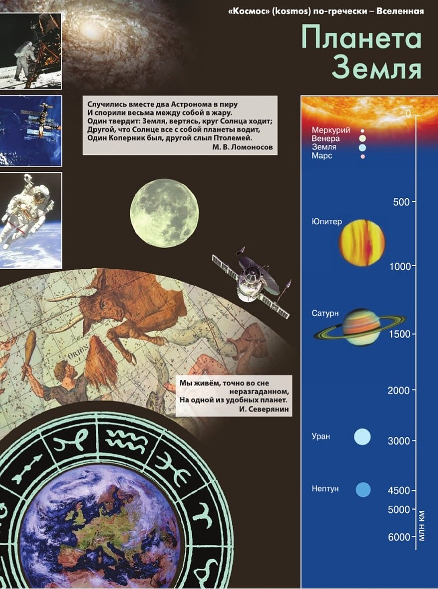
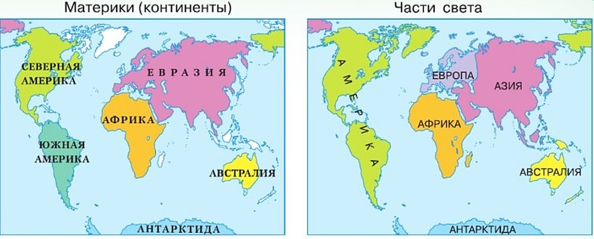

Планета Земля
Этот параграф открывает новый раздел учебника — «Планета Земля».
«Космос» (kosmos) по-гречески — Вселенная. На первой странице раздела — космос: снимки с Луны и из открытого космоса, космический аппарат, старинная карта звёздного неба и Земля из космоса.
Справа — шкала. На ней Солнце и все планеты по порядку. Цифры — расстояние от Солнца в миллионах километров.
Ещё на странице два стихотворения. Михаил Ломоносов пишет о споре двух астрономов: кто вокруг кого ходит — Земля вокруг Солнца или Солнце вокруг Земли? Кто прав — узнаешь в первом разделе.
Случились вместе два Астронома в пиру
И спорили весьма между собой в жару.
Один твердит: Земля, вертясь, круг Солнца ходит;
Другой, что Солнце все с собой планеты водит,
Один Коперник был, другой слыл Птолемей.
М. В. Ломоносов
Мы живём, точно во сне неразгаданном,
На одной из удобных планет.
И. Северянин
«Космос» (kosmos) по-гречески — Вселенная
Случились вместе два Астронома в пиру
И спорили весьма между собой в жару.
Один твердит: Земля, вертясь, круг Солнца ходит;
Другой, что Солнце все с собой планеты водит,
Один Коперник был, другой слыл Птолемей.
М. В. Ломоносов
Мы живём, точно во сне неразгаданном,
На одной из удобных планет.
И. Северянин

- § 8 Мы во Вселенной — ты здесь
- § 9 Учимся с «Полярной звездой» (1)
- § 10 Движения Земли
- § 11 Солнечный свет на Земле
1. В стихотворении Ломоносова один астроном говорит: «Земля, вертясь, круг Солнца ходит». Другой — что «Солнце все с собой планеты водит». Кто из них Коперник, а кто Птолемей?
2. Северянин пишет, что мы живём «на одной из удобных планет». Чем Земля «удобна»? Найди ответ в параграфе.
3. Найди Землю на шкале справа. Какая она по счёту от Солнца?
Как устроена Солнечная система?
Солнечная система — лишь очень малая часть Вселенной. Вселенная вмещает множество звёздных скоплений — галактик.
Одна из галактик — наша. Её так и назвали: Галактика, или Млечный Путь. «Галактос» по-гречески — «молочный».
Ночью на звёздном небе видна белёсая полоса — как дорожка из разлитого молока. Это и есть Млечный Путь. Галактика — гигантский вращающийся диск, а полоса на небе — его ребро.
В нашей Галактике больше 100 миллиардов звёзд. Солнце — одна из них. Это раскалённая вращающаяся звезда. Она даёт нам свет и тепло.
Вокруг Солнца обращаются 8 планет, и среди них наша Земля. Каждая идёт по своей орбите — так называют путь небесного тела. Орбиты почти круглые.
Все планеты вращаются в одну сторону и почти в одной плоскости. Но скорость у них разная, и от Солнца они на разном расстоянии.
Солнце, планеты со своими спутниками и другие космические тела — астероиды, кометы — вместе образуют Солнечную систему.
До Солнца — около 150 млн км, до Луны — 384 тыс. км. Солнце дальше Луны примерно в 390 раз.
Все космические тела притягивают друг друга. Притяжение между Землёй и Луной — вот почему в океанах и морях бывают приливы и отливы.
Всё, что происходит на Солнце, на Земле и на других планетах, связано между собой и подчиняется сложным космическим законам.
Кто в центре — Земля или Солнце? Раньше верили Птолемею: Земля — неподвижный шар, а Солнце вращается вокруг неё. Это геоцентрическая система. Птолемей ошибался.
В XVI веке польский астроном Николай Коперник предложил другую модель: Земля и другие планеты вращаются вокруг Солнца. Её назвали гелиоцентрической — от греческого «гелиос», Солнце.
Солнечная система составляет лишь очень малую часть Вселенной, вмещающей множество звёздных скоплений — галактик. Одна из них — наша. Её так и назвали — Галактика или Млечный Путь (от греческого слова галактос — молочный). Ночью на звёздном небе мы видим белёсую полосу, похожую на дорожку из разлитого молока. Это и есть Млечный Путь — ребро гигантского вращающегося диска — Галактики.
В нашей Галактике сосредоточено более 100 миллиардов звёзд. Солнце — одна из них. Эта раскалённая вращающаяся звезда даёт нам свет и тепло. Вокруг Солнца по орбитам, близким к окружности, обращаются 8 планет, в том числе наша Земля. Орбита — это путь движения небесного тела. Планеты вращаются в одном направлении и практически в одной плоскости, но с разной скоростью и на разном расстоянии от Солнца. Солнце, планеты со своими спутниками и другие космические тела (астероиды, кометы и т. д.) образуют Солнечную систему. Среднее расстояние от Земли до Солнца — около 150 млн км, от Земли до Луны — 384 тыс. км.
Между Землёй и Луной, как и между всеми космическими телами, существует притяжение, благодаря чему бывают приливы и отливы в океанах и морях. Всё, что происходит на Солнце, на Земле и на других планетах, взаимосвязано и подчиняется сложным космическим законам.
Модель устройства мира, в которой Земля и другие планеты вращаются вокруг Солнца, предложил в XVI в. польский астроном Николай Коперник. Эту систему назвали гелиоцентрической (от греческого слова гелиос — Солнце). До этого была принята геоцентрическая система Птолемея, который ошибочно полагал, что шарообразная Земля неподвижна, а Солнце вращается вокруг неё.
Солнечная система: Солнце, 8 планет со спутниками, астероиды, кометы. От Земли до Солнца — около 150 млн км, до Луны — 384 тыс. км. В XVI в. Николай Коперник: в центре — Солнце.
Изучите начало темы на с. 29. Вспомните, что вам известно о звёздах и планетах из курса «Окружающий мир».
Наша Галактика — часть Вселенной. Солнечная система — часть Галактики. Земля — планета Солнечной системы.
Птолемей: в центре — неподвижная Земля, Солнце вращается вокруг неё. Ошибка
Коперник, XVI в.: в центре — Солнце, Земля и другие планеты вращаются вокруг него
Гео — Земля, гелиос — Солнце. Что в центре — то и в названии.
4. Почему Млечный Путь виден на небе полосой, а не кругом и не пятном?
5. Древние греки спрашивали: почему море то наступает, то отступает (§ 2)? Что ответил бы им этот параграф?
6. Птолемей составил карту мира с сеткой (§ 2) — одну из лучших в древности. А в чём он ошибался?
7. Чем Солнце отличается от Земли и Луны? Найди в тексте три разных слова для этих трёх тел.
Как устроена наша планета?
Земля — шар, но не совсем ровный. Поверхность у неё неровная, а у полюсов Земля слегка сплюснута. Такую форму учёные назвали геоидом.
Площадь поверхности Земли — 510 млн км². Большая её часть покрыта водой. Над водой выступает суша — материки и острова.
Материков шесть: Евразия, Африка, Северная Америка, Южная Америка, Австралия и Антарктида.
С давних времён сушу делят ещё и на части света. Так сложилось исторически. Частей света тоже шесть (рис. 20).
Но совпадают они не во всём. Два материка — Северная и Южная Америка — это одна часть света, Америка. А на одном материке Евразия — две части света: Европа и Азия. Здесь находится наша Родина — Россия.
У Земли есть природные оболочки. Их четыре: литосфера — твёрдая, гидросфера — водная, атмосфера — воздушная и биосфера — сфера жизни.
Земля — единственная известная планета, где есть жизнь.
Оболочки взаимодействуют — влияют друг на друга. Все вместе они образуют географическую оболочку. Дальше ты будешь изучать каждую оболочку — и то, как они влияют друг на друга и на человека.
Земля имеет неровную поверхность и шарообразную форму — она слегка сплюснута с полюсов. Подобную форму Земли учёные назвали геоидом. Площадь поверхности Земли 510 млн км², и большая её часть покрыта водой. Над водой выступает суша — материки и острова. Материков шесть: Евразия, Африка, Северная Америка, Южная Америка, Австралия и Антарктида. Сушу земного шара с давних времён делят не только на материки, но и на исторически сложившиеся части света (рис. 20). Частей света тоже шесть. Материки Северная Америка и Южная Америка образуют часть света Америку, а на одном материке Евразия находятся две части света — Европа и Азия. Здесь находится наша Родина — Россия.
У Земли есть природные оболочки: твёрдая — литосфера, водная — гидросфера, воздушная — атмосфера и сфера жизни — биосфера. Земля — единственная известная планета, где существует жизнь. Взаимодействуя между собой, все оболочки вместе образуют географическую оболочку. Мы будем изучать каждую оболочку в отдельности и их взаимное влияние друг на друга и на человека.

Материков шесть: Евразия, Африка, Северная Америка, Южная Америка, Австралия, Антарктида. Частей света тоже шесть: Европа, Азия, Африка, Америка, Австралия, Антарктида.
Земля имеет шарообразную форму, названную геоидом. Земная суша делится на материки и части света. Оболочки Земли — литосфера, гидросфера, атмосфера, биосфера.
большой участок суши среди воды. Евразия — один материк
деление суши, сложившееся исторически. На Евразии — две: Европа и Азия
Материки разделяет вода. Части света придумали люди — поэтому Европа и Азия могут быть на одном материке.
8. Материков шесть и частей света шесть. Почему же они совпадают не во всём?
9. В каких оболочках Земли живёшь ты — в одной или сразу в нескольких?
10. Ермак перешёл Уральские горы (§ 6). Из какой части света в какую он попал? А материк сменился?
11. «Большая часть поверхности покрыта водой». Почему тогда планету называют Земля, а не Вода?
Итоги параграфа
- Какие космические тела образуют Солнечную систему?
- Путь Земли вокруг Солнца называется: а) орбитой; б) эллипсом; в) осью.
- Выберите верные утверждения: 1) Солнце по размерам равно Земле; 2) Земля — третья по счёту от Солнца планета; 3) Солнечную систему образуют Земля и Солнце; 4) Солнце — раскалённая звезда, которая даёт нам свет и тепло.
- Прочитайте фрагмент параграфа «Как устроена наша планета?». Выпишите в три колонки: материки; части света; земные оболочки.
Проверь себя
Нажимай по очереди: сначала то, внутри чего находится всё остальное. Подсказка — схема «Твой космический адрес».
Проверь себя по рис. 20 и схеме «6 материков — 6 частей света».
Евразия
Евразия — материк. На нём две части света: Европа и Азия.
Европа
Европа — часть света на материке Евразия.
Азия
Азия — часть света на материке Евразия.
Северная Америка
Это материк. Вместе с Южной Америкой он образует часть света Америку.
Америка
Часть света Америку образуют два материка: Северная и Южная Америка.
Африка
Африка — и материк, и часть света.
Австралия
Австралия — и материк, и часть света.
Антарктида
Антарктида — и материк, и часть света.
Мамины кварцы и минералы
Камни — твёрдая оболочка Земли, литосфера.
Горы в Турции
Горы — тоже твёрдая оболочка.
Волга у Ягодного
Реки — водная оболочка.
Океаны и моря
Большая часть поверхности Земли покрыта водой — это гидросфера.
Воздух, которым ты дышишь
Атмосфера — воздушная оболочка.
Ветер
Ветер — это движущийся воздух, атмосфера.
Люся и Юкси
Всё живое — сфера жизни, биосфера.
Дубы Терлецкой дубравы
Растения — тоже биосфера.
1. Какая звезда даёт нам свет и тепло?
2. Путь Земли вокруг Солнца называется…
3. Какая по счёту от Солнца планета Земля?
4. Что предложил Николай Коперник в XVI в.?
5. Почему в океанах и морях бывают приливы и отливы?
6. Какая часть света находится на одном материке с Европой?
Расскажи вслух
Космический адрес Земли
- Вселенная вмещает множество звёздных скоплений — галактик.
- Наша Галактика — Млечный Путь: более 100 млрд звёзд, на небе — белёсая полоса, ребро диска.
- Солнечная система — часть Галактики, Земля — планета Солнечной системы.
Как устроена Солнечная система
- Солнце — раскалённая вращающаяся звезда, даёт свет и тепло.
- 8 планет обращаются вокруг Солнца по орбитам, близким к окружности; ещё спутники, астероиды, кометы.
- До Солнца около 150 млн км, до Луны 384 тыс. км; притяжение Луны — приливы и отливы.
Птолемей и Коперник
- Птолемей: в центре неподвижная Земля, Солнце вращается вокруг неё — геоцентрическая система.
- Коперник, XVI в.: Земля и другие планеты вращаются вокруг Солнца — гелиоцентрическая система.
- Об этом споре — стихотворение Ломоносова на с. 29.
Форма и поверхность Земли
- Геоид: шар, слегка сплюснутый у полюсов.
- Поверхность 510 млн км², большая часть покрыта водой; суша — материки и острова.
- 6 материков и 6 частей света: Евразия — Европа и Азия, две Америки — одна Америка.
Оболочки Земли
- Литосфера — твёрдая, гидросфера — водная, атмосфера — воздушная, биосфера — сфера жизни.
- Земля — единственная известная планета, где существует жизнь.
- Вместе, взаимодействуя, оболочки образуют географическую оболочку.